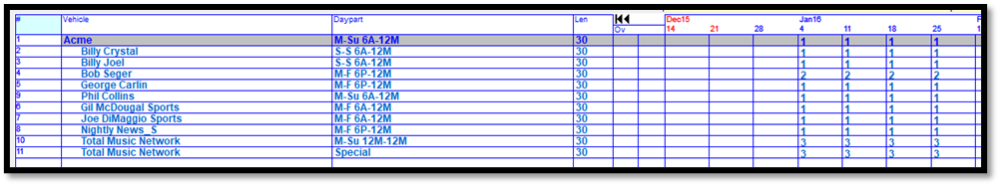
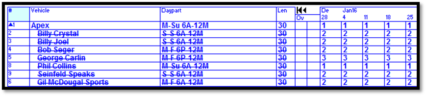
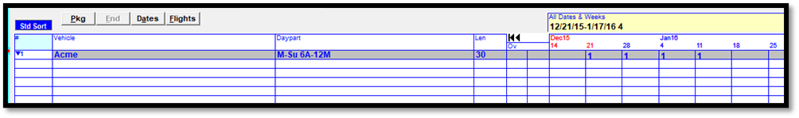
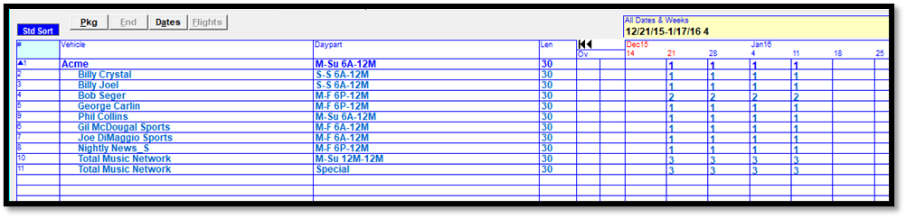
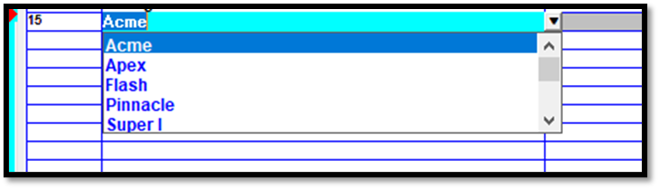
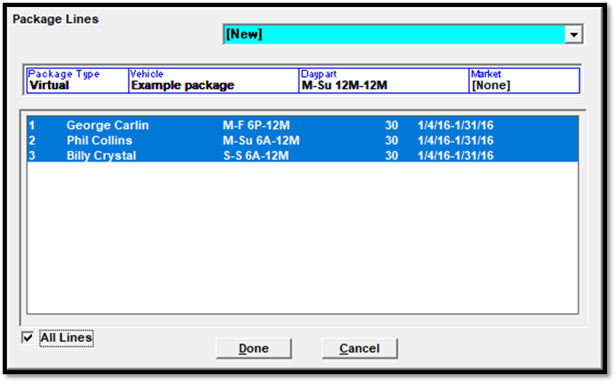
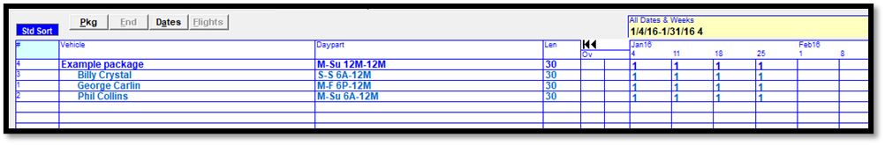
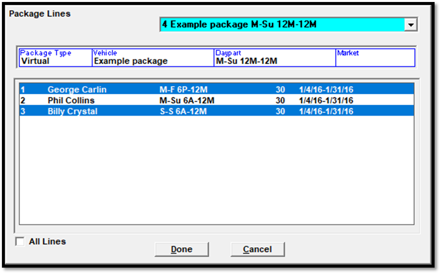

Packages
Packages are a way of grouping schedule lines under a single package vehicle. There are two types of packages: Standard and Dynamic. Standard packages are pre-configured packages that can be selected directly from the Vehicle field and added to a contract like any other vehicle. Dynamic packages are created on the Package (PKG) screen from existing contract lines, which are bundled together under the package vehicle. The lines that make up a package are called “Hidden Lines”.
Depending on your software version, hidden lines will either appear indented and in a light blue font color (on version 7.1 and above, as shown below) or indented with a strikethrough (on version 7.0 and prior). On all versions, package vehicles are always shown in a dark blue font color.

This picture shows a package on version 7.0, where the hidden lines are indicated with a strikethrough to differentiate them from non-hidden lines.

On some systems, a small arrow will appear next to the package line number, which is clicked on to either hide or display the hidden lines. The image below shows a package (package name “Acme”) with the hidden lines hidden. Clicking the arrow on the left will expand the package to show the hidden lines.

The image below shows the same package, but it has been expanded by clicking the blue arrow.

Standard Packages
Standard packages are selected directly from the vehicle dropdown list. They appear at the top of the vehicle list, and use a blue font color, as shown in the picture below.

The standard packages that are shown in the vehicle list are those standard packages that have been added to the rate card that was selected in the contract header area.
To add a standard package to a contract:
- Tab to a new line, and select the standard package from the vehicle dropdown list.
- Tab to the daypart field, and select the daypart.
- Enter the spot length and any override requirements, then tab to the weekly grid.
- Enter the package spot counts.
- Advance to the price field, adjust the price if needed and allowed, then tab to the next line to create the package. When tabbing to the next line like this, the “hidden lines” that make up the package will get added to the contract, and you will see them appear on the screen, under the package vehicle.
Dynamic Packages
Dynamic packages are created as the contract is being edited using existing contract lines.
To create a new dynamic package, there must be at least one contract line that has already been entered on the contract. Once the contract lines that make up the package have been entered, the contract lines can be packaged into a dynamic package.
To create a dynamic package:
- Press the PKG (package) button to bring up the package screen.
- Select the package type of Virtual or Real (not all systems allow both types). Virtual packages have package spot counts that are independent of the spot counts that make up the hidden lines, and only the package information will be shown on the invoice, using virtual spot dates and times that are representative of when the actual spots aired. Real packages have spot count totals equal to the number of hidden line spots, and the hidden vehicles and actual air dates and times will appear on the invoice.
- In the Vehicle field, select the package vehicle name from the dropdown, or enter a new name.
- Select the daypart from the list of available dayparts. The daypart must match or encompass the hidden line dayparts.
- Select the market (if the Market feature is used).
- In the lower half of the screen, the contract lines are shown. Use Ctrl-Click to individually select the contract lines that need to be added to this dynamic package, or press Click and Shift-Click to add a selection of lines, or press the “All Lines” checkbox to add all the lines to the standard package.

After the lines have been selected, press Done to create the package. The system will return to the main screen, where the package will now appear, as shown in the picture below.

Modifying Packages
Existing packages can be modified in a variety of ways, although on some systems, standard packages are disallowed from being edited, so not all of these modification techniques will be available for all users.
To remove a newly entered package, click on the package vehicle and drag it to the trash can in the lower right corner of the screen. A prompt will appear that asks if you want to remove the package only, which will remove the package and change the hidden lines back to non-hidden lines; or remove the package and the hidden lines, which will remove the entire package; or cancel, which will switch back to the main screen without making any changes.
To cancel a package on a scheduled contract, use the End button to terminate the package.
To remove a line from a package:
- Press the PKG button.
- Select the package from the package dropdown.
- Ctrl-click the line to remove from the package so that it is no longer highlighted in blue, then press Done.

The selected line will now be a conventional line, and no longer part of the package.
To add an additional line to an existing package:
- Enter the new line on the contract, then press the PKG button.
- Select the existing package from the list of packages (the dropdown menu in the upper right corner of the Package screen), then Ctrl-Click on the new line.
- Press Done and the new line will be added to the existing package.